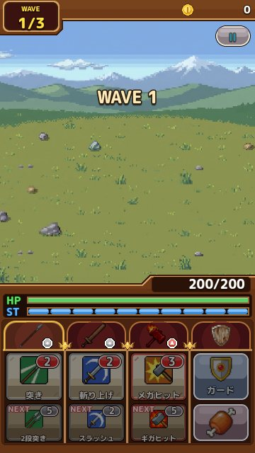

強さの決め方：シミュレーターで勝率を見る
敵の HP と攻撃力を「ふつうの腕前の人の勝率」から決める、シミュレーターを使った調整の方法を紹介します。 更新：2026-11-23
強さは「勝率」で決めています
RPG の敵の強さを決めるとき、よくあるのは「次のエリアの敵は前のエリアの 1.2 倍」のように、決まった倍率で上げていくやり方です。キシドラ！も最初はそうしていました。ところが、遊んでみるとエリアによって手ごたえがばらばらでした。弱点の武器がそろいやすいエリアは楽すぎ、そろいにくいエリアは急に勝てなくなります。
そこで今は、敵の HP と攻撃力を「その場所に着いたふつうの腕前の人が、何 % の確率で勝てるか」から決めています。勝率を測るのは、ゲームと同じ戦いのプログラムを画面なしで何十回も戦わせるシミュレーターです。この記事では、そのシミュレーターの中の「プレイヤーの手本」と、表の作り方を紹介します。

ゲームと同じプログラムで戦わせる
シミュレーターのいちばん大事な点は、ゲームの戦いのプログラムをそのまま使っていることです。ダメージの計算、ガードの判定、スタン、必殺技、盾の効果など、戦いの決まりを別に書き直したものではありません。ゲームで決まりを変えれば、シミュレーターの結果も同じように変わります。
同じ乱数の種を使えば、同じ戦いをまったく同じように再現できます。新しい世界を足したときは、地上と地底の 7 か所ずつを同じ種で戦わせた記録が、足す前と足したあとでまったく同じになることを確かめました。これで、新しい世界の作業が前の世界の強さを変えていないと分かります。
プレイヤーの手本：ガードの成功率
シミュレーターの中のプレイヤーは、決まった確率でガードに失敗する手本です。いちばん大事な数が、このガードの成功率です。
- 地上：ガードの成功率 80%（5 回に 1 回は失敗する）
- 地底から先：ガードの成功率 90%（地上をクリアした人なので、上手になっている）
ガードに成功した 1 発は、当たる 1〜20 フレーム前のどこかで押します。ノーマルの受付では、これでふつうのガードが約 55%、ジャストが約 30%、ミラクルが約 15% になります。初めはこの幅を 1〜12 フレームにしていましたが、それではガードの 4 分の 1 がミラクルになり、ふつうの人よりずっと上手な手本になっていました。
手本は「ふつう」のほかに「上手」（失敗 5%）と「苦手」（失敗 60%）もいて、同じ STAGE で 3 人の勝率をくらべられます。1 回の行動ごとに、人が画面を見て押すまでの時間として 45 フレームを足し、戦いにかかる時間も見積もります。STAGE の時間はおよそ 3〜4 分、ボスは 5 分までが目安です。
STAGE ごとの目標の勝率
エリアの 5 つの STAGE には、それぞれ目標の勝率を決めています。後ろの STAGE ほど手ごわくし、ボスの STAGE では「ときどき負ける」くらいにしています。
| STAGE | 地上の目標 | 地底の目標 |
|---|---|---|
| STAGE 1 | 97% | 93% |
| STAGE 2 | 95% | 90% |
| STAGE 3 | 92% | 86% |
| STAGE 4（中ボス） | 80% | 72% |
| STAGE 5（ボス） | 70% | 60% |
地底の目標が低いのは、手本のガードがうまくなっているぶん、勝率を同じにすると歯ごたえがなくなるからです。海底も地底と同じ目標で決めています。どの世界でも、一度でも負けた人が装備を見直したり、少し前の STAGE で品を集めたりすれば勝てる、という線をねらっています。
HP の表：「何回の攻撃で倒せるか」から
HP は、倍率ではなく「その場所に着いた人が、何回の攻撃で倒せるか」から 1 体ずつ決めています。
- その場所に着いた人の装備（自分の武器 2 本と、フレンドから借りた武器、その場所の盾）を想定します
- シミュレーターで、1 回の攻撃で削る HP を測ります
- それに「倒すまでの攻撃の回数の目標」をかけます。地上は雑魚 4 回・中ボス 14 回・ボス 25 回、地底は 4.5 回・16 回・28 回です
エリアごとに測った数は、装備の当たり外れでかなりぶれるので、エリアの順にならした線に合わせます。さらに、ボスは中ボスの 1.2 倍以上、奥の場所ほど高い、といった決まりを守ります。
測った数を使う理由がよく分かったのが、海底編を作ったときです。最初は、地底の終わりの敵の「攻撃力 1 あたりの HP」を、海底の武器の攻撃力に引き伸ばして HP を決めました。ところが試すと、海底の武器の効果とスキルでダメージが攻撃力よりずっと大きく伸び、ボスが 12 回の攻撃で倒れてしまいました。地底の終わりのボスは 40 回以上かかっていたので、手ごたえがまるで違います。そこで海底も測った数で決め直し、目標を雑魚 6 回・中ボス 22 回・ボス 40 回にしました。
攻撃の表：勝率と「1 発の重さの帯」
攻撃力は、HP を決めたあとで、勝率が目標になるように決めます。雑魚の攻撃は STAGE 1〜3 の勝率、中ボスは STAGE 4、ボスは STAGE 5 の勝率で決めます。
ただ、勝率だけで決めると困ったことが起きます。軽い攻撃をたくさん受ける戦いと、重い攻撃を少しだけ受ける戦いが、同じ勝率になることがあるからです。重すぎる攻撃は、運が悪いと一発で流れが決まってしまいます。そこで「ガードしなかった 1 発が、最大 HP の何 % になるか」に帯を決めました。地上の雑魚は 10〜14%、中ボスは 8〜22%、ボスは 10〜28% で、ボスの必殺技も 40% までです。帯の外に出るところは帯のはしで止め、足りない勝率は HP（戦いの長さ）で合わせます。
この帯ができたのには、はっきりした失敗のきっかけがありました。最初の表では、手本のガードの失敗を 25% にし、難易度の受付も実際のゲームにない狭いものにしていました。それを実際の手本（失敗 20%・ノーマル）に直したところ、ジャストやミラクルで ST が回り、雑魚の STAGE では HP が 5% も減らなくなっていたのです。「雑魚とはいえ受けるダメージ 7 は低すぎる」という声をいただき、雑魚・中ボス・ボスで別々の倍率と帯を持つ今の形に作り直しました。

4 ターンのボスをパワータイプにした話
勝率の表を作ったあとで、見落としていたことが一つ見つかりました。ほとんどのボスは 3 カウントごとに攻撃しますが、地底の神殿の石像のボスだけは 4 カウントごとでした。HP も攻撃力も同じころの 3 カウントのボスとほぼ同じなのに、攻撃の回数は 4 分の 3 しかなく、試してみると、ボスの WAVE で主人公が受けるダメージ（減る HP の割合）は、奥のボスの半分以下でした。
そこで 2026 年 11 月 2 日に、3 カウントより遅いボスは、1 カウント多いごとに HP を 25%、攻撃力を 60% 上げることにしました。攻撃力が 4/3 倍（約 133%）で 1 カウントあたりのダメージが 3 カウントのボスと同じになり、それより上の分で 1 発が重くなる計算です。試しでは、そのボスの WAVE で減る主人公の HP が、最大 HP の 20% から 35% になりました。
11 月 8 日には、もう一歩進めて「行動の遅いボス＝パワータイプ」と性格づけました。攻撃力の上げ幅を 100% にして 1 発を表の 2 倍にし、スタンに要る値を 5 倍にしてスタンしにくくしています。今はどの世界の行動の遅いボスもこの決まりで、11 月 18 日からは、必殺技の前に力をためる動き（その必殺技は攻撃力 2 倍、ミラクルガードにならない）も入りました。遅いけれど一発が重く、倒れにくい、という分かりやすい個性になりました。
難易度と、世界ごとの調整
勝率の表は、すべてノーマルの難易度で作っています。ほかの難易度は、受けるダメージの倍率とミラクルの回復量、ガードの受付の長さで差をつけます。イージーは受けるダメージが 0.8 倍でミラクルの回復が 2 倍、ルナティックは受けるダメージ 1 倍に受付がいちばん短い、という具合です。表を難易度ごとに作らないことで、どの難易度でも敵の顔ぶれと戦いの流れは同じになります。くわしくは 難易度 5 段階のちがい をご覧ください。
世界ごとの細かい調整もあります。海底編は公開のときに HP を 1.4 倍・攻撃力を 1.2 倍にしましたが、遊んだ声を受けて、翌日に HP をその 0.8 倍（元の 112%）に下げました。また、後の世界ほど武器のスタン値が大きく、海底の敵がスタンしすぎていたので、スタンに要る値を地上 100%・地底 150%・海底と天空 200% に分けています。
やりこみダンジョン「蜃気楼」の考え方
各世界の冒険を終えた人向けの「蜃気楼」は、ふつうの STAGE とまったく違う考え方で強さを決めました。目標は「クリアするのがとても難しい」ことです。ここでは勝率の目標ではなく、「1 発のガードを失敗する確率」から考えています。
はじめは、ガードしなかった 1 発で倒れる形も試しました。すると、クリアできる確率は「1 − 1 発の失敗率」を攻撃の数だけかけた数になります。上手な人の失敗率を 1% として約 600 発を受けると、0.99 の 605 乗で約 0.23% です。ただ「即死はやりすぎ」という結論になり、今はいつものダメージの計算にもどして、ガードやジャストでも少しずつ削られる強さにしています。
このとき、シミュレーターの「いちばん強い人」でも、通しにかかる時間が実際の遊びより約 2.5 倍長くなることが分かり、HP はその分を見込んで決めました。数字だけで決めずに、試しの結果と遊んだ感想を両方見ながら、これからも少しずつ合わせていきます。
まとめ
- 強さは倍率ではなく、ふつうの腕前の手本の勝率で決めます
- 手本のガードの成功率は地上 80%、地底から先は 90% です
- HP は「1 回の攻撃で削る量 × 倒すまでの回数」、攻撃は「勝率」と「1 発の重さの帯」で決めます
- 表を作ったあとも、遊んだ声とシミュレーターの両方で見直し続けています
勝てないときの見直し方は はじめての冒険ガイド と 弱点とスタンのしくみ にまとめています。